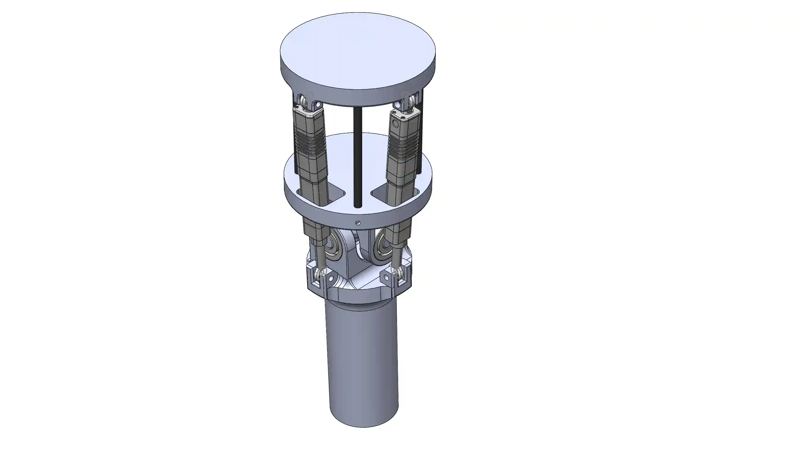
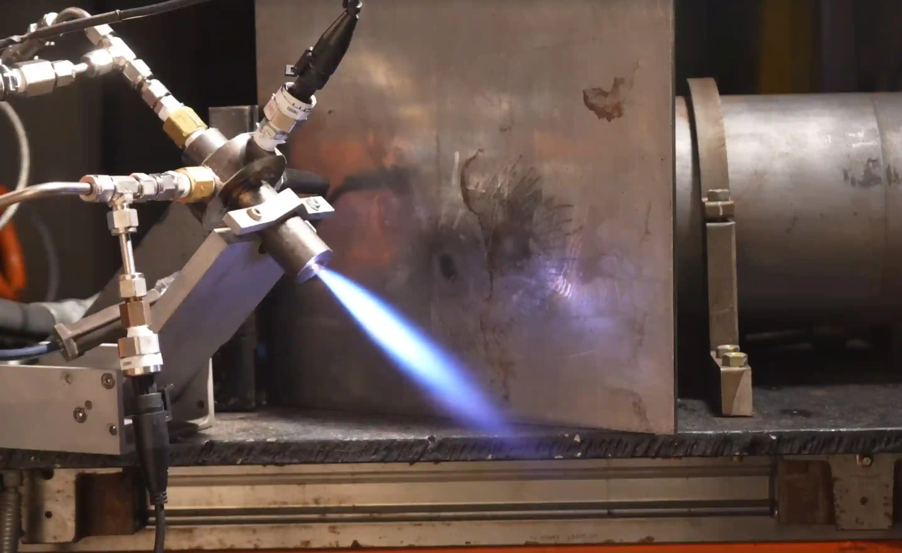
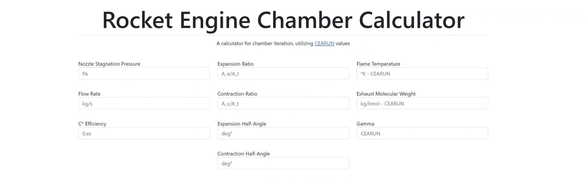
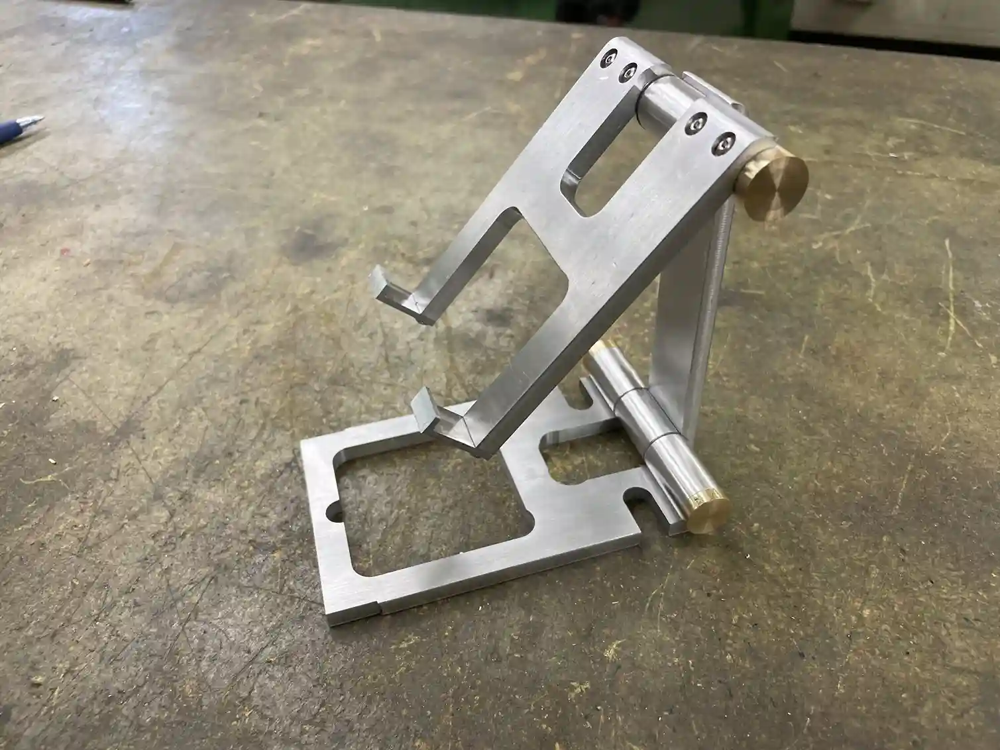

Here are some of my smaller projects, or ones in early development.
HPR TVC
This is the latest version of Sigma Space's TVC mount. It's much heavier duty and meant to be machined from aluminum. This design could also be used to mount a full liquid fueled engine, and I'm excited to see where it goes!


Torch Igniter
This was my first foray into rocket engine development, where I built an augmented spark igniter for the Copilot hotfire. This igniter is basically a miniature rocket engine, with the same internal geometries.



Rocket Engine Chamber Calculator
This was the first project that I’ve done involving web development. Over the course of a few days, I picked up JavaScript, CSS, and HTML (as well as learning BootStrap). I made this website to help me calculate and iterate on small rocket engines; it’s able to calculate and change everything from chamber dimensions to expansion ratios instantly, based on equations from Huzel and Huang’s Design of Liquid Propellant Rocket Engines.
This also had the benefit of teaching me the basic isentropic engine equations.


Machine Shop Stand
Certified me for the UBC Student Machine Shop! Learned how to use the bandsaw, waterjet, mill, and lathe to produce all kinds of parts out of aluminum and brass. Each part of the stand was machined from a solid piece of metal and put together.

